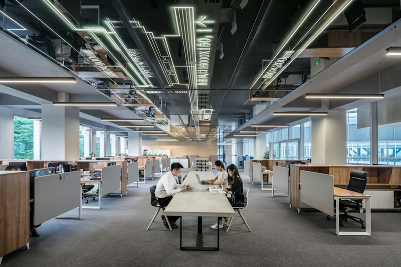

Functional Layout
Consider the relationship between intended activities, work areas, storage, circulation, and supporting spaces to streamline production sequences and minimize transit bottlenecks.
Industrial architecture requires a disciplined balance of operational line efficiency, high-capacity structural grids, robust logistics circulation, and strict occupational safety. From advanced manufacturing facilities to high-throughput distribution hubs, spatial planning directly governs production output, heavy equipment integration, and material movement.
At Artech Design (Aspirations Architects Engineers), our practice brings over three decades of integrated architectural planning and structural engineering across Chennai and South India. We design industrial facilities that optimize clear floorplate spans, segregated freight and personnel circulation, and environmental compliance, while delivering adaptable structural skeletons that support long-term technological evolution.
Optimizing structural column grids, overhead crane girder capacities, high floor loading thresholds, and weather-tight envelopes.
Separating articulated heavy-vehicle ingress, dock apron turning radii, internal material flows, and safe pedestrian pathways.
Essential structural, logistical, and technical coordination parameters that govern high-performance industrial architecture.
Consider the relationship between intended activities, work areas, storage, circulation, and supporting spaces to streamline production sequences and minimize transit bottlenecks.
Consider site access, movement of people and vehicles, circulation, loading areas, and spatial relationships, ensuring safe heavy-vehicle turning and segregated pedestrian pathways.
Consider the intended use of the facility, practical space requirements, future flexibility, and relevant project constraints to accommodate equipment upgrades.
Recognise that industrial projects require close coordination with structural engineering, specialized building services, fire safety, environmental standards, and operational systems.
An illustrative overview of potential industrial building categories reflecting our integrated architectural and engineering capabilities.

Heavy and light manufacturing plants, assembly facilities, and fabrication workshops designed for operational line efficiency and structural crane integration.

High-bay distribution warehouses, logistics hubs, and automated storage facilities engineered for volumetric efficiency, floor loading, and turnaround speed.

Administrative headquarters, quality-control laboratories, security control gates, and technical workshops integrated within industrial facilities.
Master-planned industrial estates, logistics parks, and manufacturing campuses with integrated access roads, utility networks, and environmental buffers.
A methodical four-stage architectural framework guiding each industrial development from operational brief through to delivery.
Understand the project brief, intended activities, site information, equipment specifications, and operational needs.
Explore suitable planning options, logistics flow diagrams, and initial structural concepts based on project requirements.
Refine the proposed design while considering functionality, relevant technical coordination, material resilience, and project constraints.
Support the agreed project process through relevant documentation, technical working drawings, and coordinated construction stage delivery.


Connect with our architectural and engineering team in West Mambalam, Chennai to discuss your manufacturing, warehouse, or industrial facility brief.